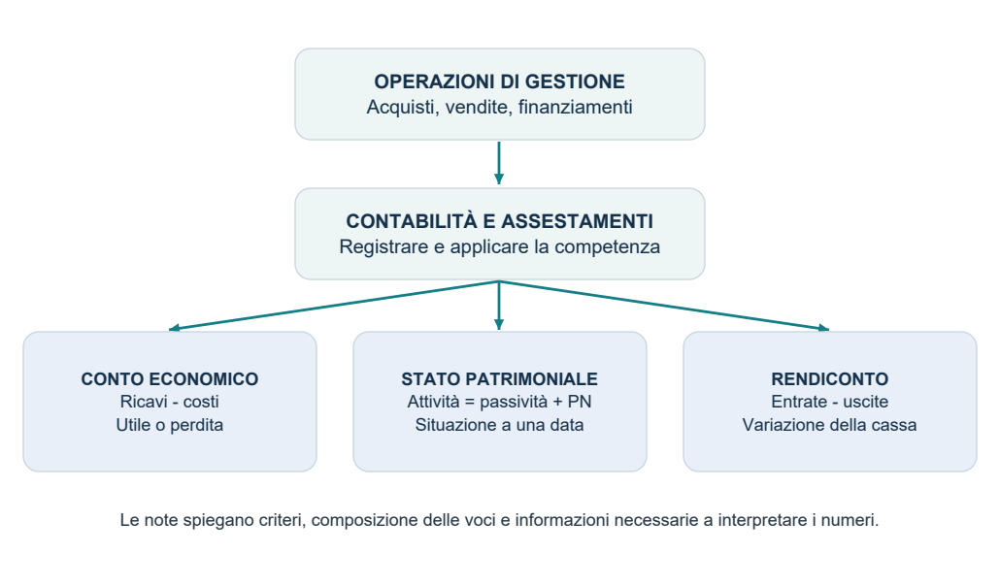
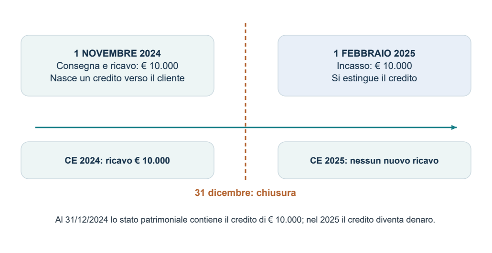
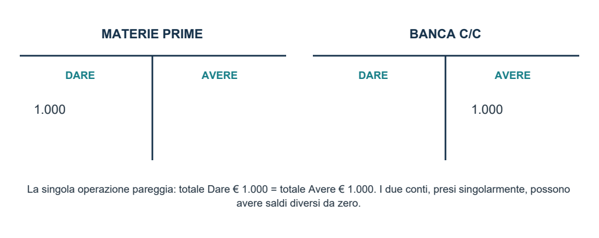
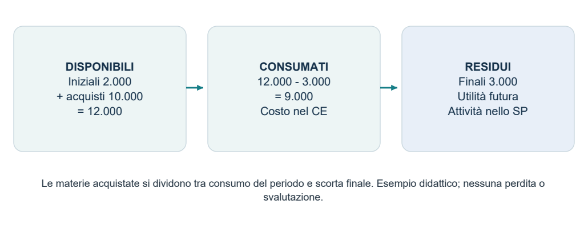
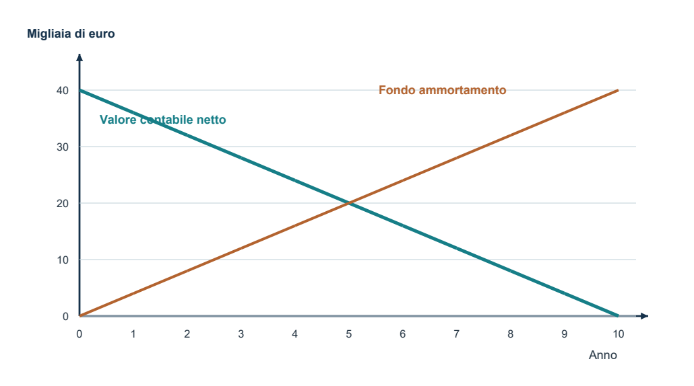
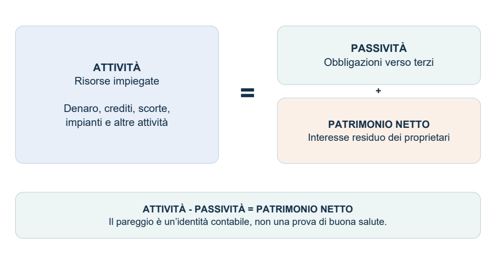
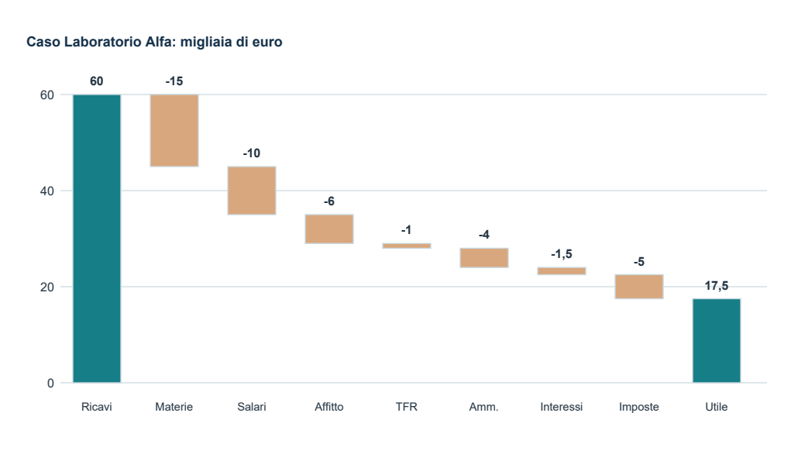
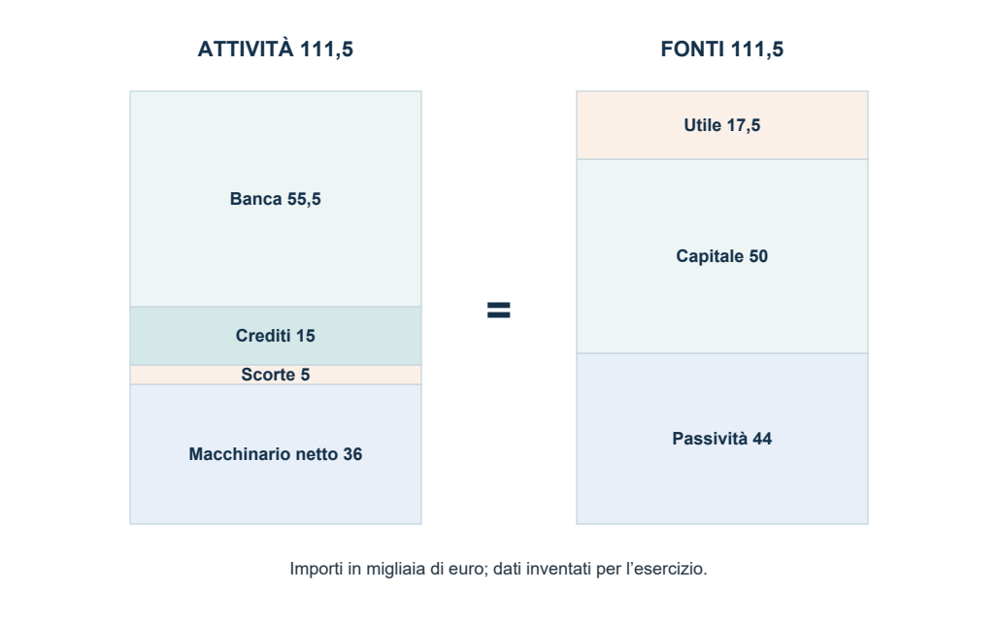
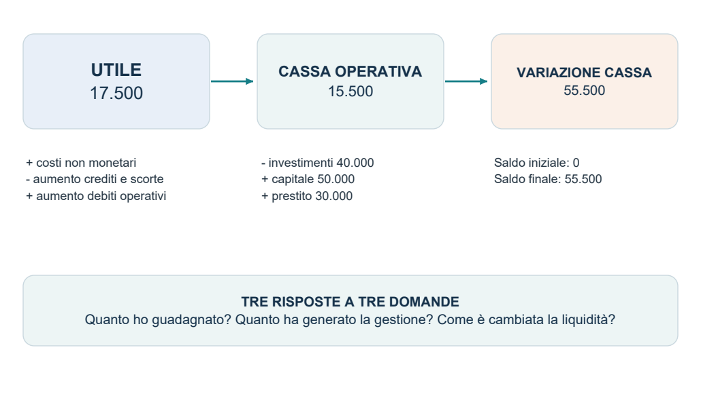

Modulo 2 · Bilancio e contabilità
Il bilancio di esercizio
Competenza e cassa, partita doppia, conto economico e stato patrimoniale, con schemi e casi svolti.
Riassunto completo illustrato
34 pagine · teoria, schemi e caso completo svolto.
Materiale del professore
2.1.1 · Bilancio di esercizio
Il bilancio d’esercizio
IMPRESA E DECISIONI STRATEGICHE / BILANCIO D’ESERCIZIO
Dispensa completa illustrata • Teoria, esempi svolti e preparazione all’orale
Questa dispensa rielabora le 82 slide del dott. Luca La Mantia e sviluppa i passaggi necessari per capire la contabilità: dalla competenza economica alla partita doppia, fino alla lettura congiunta di conto economico e stato patrimoniale.

Come usare queste pagine
Leggi la spiegazione, ricostruisci lo schema senza guardarlo e rifai i calcoli. Nel caso completo segui sempre la stessa sequenza: operazione → conti → risultato economico → patrimonio → cassa. Le domande finali servono per allenare risposte ragionate, non soltanto definizioni.
Fonte principale: “2.1.1. Bilancio di esercizio.pdf”, Impresa e decisioni strategiche, lezione del 28 settembre 2026. I numeri delle slide corrispondono alle pagine del PDF. Gli esempi aggiunti sono didattici e inventati. Le precisazioni sui principi contabili sono separate dallo schema del corso e documentate in fondo. Edizione di studio: 28 settembre 2026.
IMPRESA E DECISIONI STRATEGICHE / BILANCIO D’ESERCIZIO
Indice e percorso di studio
Una lettura progressiva: capire, registrare, interpretare, esercitarsi
| Pagine | Argomento | Obiettivo |
|---|---|---|
| 3-4 | Funzione e documenti del bilancio | Distinguere le tre dimensioni e il quadro del corso. |
| 5-6 | Competenza e variazioni | Separare ricavi/costi da incassi/pagamenti. |
| 7-10 | Partita doppia e operazioni | Usare Dare/Avere e registrare gli esempi. |
| 11 | Assestamenti di fine esercizio | Passare dalle registrazioni alla competenza. |
| 12-17 | Conto economico | Leggere ricavi, consumi, ammortamenti e risultati intermedi. |
| 18-21 | Stato patrimoniale | Comprendere attività, passività, patrimonio netto. |
| 22-27 | Caso completo Laboratorio Alfa | Costruire registrazioni, CE, SP e raccordo con la cassa. |
| 28-29 | Esercizi con soluzioni | Mettere alla prova ragionamento e calcoli. |
| 30-31 | Domande per l’orale | Collegare i concetti e prevenire gli errori. |
| 32 | Formule e glossario | Ripassare rapidamente prima dell’esame. |
| 33-34 | Precisazioni e fonti | Distinguere schemi didattici e principi contabili. |
Tre livelli di approfondimento
Nucleo del corso: definizioni, logica e voci presenti nelle slide.
Integrazione didattica: passaggi esplicitati, esempi numerici, assestamenti elementari e raccordo con la cassa.
Precisazione: correzione di formule troppo generali o di schemi che non vanno scambiati per un modello normativo universale.
I grafici sono ricostruzioni originali per lo studio. Quando rappresentano importi, i valori e le unità sono indicati; gli schemi concettuali non rappresentano dati statistici. Tutti gli esercizi trascurano l’IVA, salvo diversa indicazione.
IMPRESA E DECISIONI STRATEGICHE / BILANCIO D’ESERCIZIO
A che cosa serve il bilancio
Fonte: slide 3-7, 20-24
Il bilancio d’esercizio rappresenta la situazione patrimoniale e finanziaria dell’impresa a una data e il risultato economico prodotto in un periodo. L’esercizio è il periodo amministrativo a cui si riferiscono le rilevazioni: spesso coincide con l’anno solare, ma non è una necessità logica.
| Dimensione | Domanda | Esempio |
|---|---|---|
| Economica | La gestione ha prodotto un utile o una perdita? | Ricavi 100, costi di competenza 80: utile 20. |
| Patrimoniale | Quali attività e obbligazioni esistono alla chiusura? | Banca, crediti, scorte, impianti, debiti e patrimonio netto. |
| Finanziaria | Come si finanzia l’impresa e come cambia la liquidità? | Un prestito aumenta il denaro e anche il debito da restituire. |
Chi lo usa e perché
Soci e investitori valutano risultati, rischi e impiego del capitale. Amministratori e responsabili aziendali controllano la gestione. Lavoratori e rappresentanze osservano continuità e capacità dell’impresa. Banche e fornitori valutano la capacità di rispettare le obbligazioni. Amministrazione fiscale e altri soggetti esterni leggono informazioni con finalità differenti.
Informazione, controllo e decisioni
Il bilancio rende confrontabili risultati e risorse, permette di controllare come è stato gestito il capitale e fornisce una base per decisioni future. È però prevalentemente una rappresentazione consuntiva: le prospettive richiedono anche piani, previsioni e informazioni sull’ambiente competitivo.
Le finalità richiamate nelle slide
La lettura interna aiuta la gestione; quella prospettica usa il passato per ragionare sul futuro; la finalità civilistica riguarda la rappresentazione secondo le regole applicabili; quella fiscale si collega alla determinazione delle imposte. Utile contabile e base imponibile non sono automaticamente uguali.
IMPRESA E DECISIONI STRATEGICHE / BILANCIO D’ESERCIZIO
I documenti e il quadro di riferimento
Fonte: slide 5, 22-23 • Precisazioni: R1-R3 e R5, pp. 33-34
| Documento | Che cosa mostra | Come leggerlo |
|---|---|---|
| Stato patrimoniale (SP) | Attività, passività e patrimonio netto a una data. | È una fotografia di consistenze, dette anche stock. |
| Conto economico (CE) | Ricavi, costi e risultato del periodo. | È un prospetto di flussi economici maturati nel periodo. |
| Rendiconto finanziario | Flussi di disponibilità liquide nel periodo. | Spiega la variazione della cassa tra due date. |
| Nota integrativa / note | Criteri, dettagli delle voci e altre informazioni esplicative. | Dà significato a valori che, da soli, possono essere ambigui. |
Un credito di 10.000 euro nello SP è un saldo esistente alla chiusura. Vendite per 10.000 euro nel CE sono un flusso di ricavi del periodo. Possono avere lo stesso importo, ma descrivono fenomeni differenti.
Le slide adottano un’impostazione di ispirazione IAS/IFRS
L’affermazione secondo cui ogni bilancio debba seguire gli IAS/IFRS è troppo ampia. In Italia convivono bilanci IAS/IFRS e bilanci redatti secondo il quadro civilistico e i principi OIC; l’applicazione dipende dall’impresa e dalle regole pertinenti. Questa dispensa segue la logica della lezione senza sovrapporre automaticamente i due sistemi. [R1]
Inoltre, il set completo previsto dallo IAS 1 comprende anche il prospetto delle variazioni del patrimonio netto, il risultato economico complessivo e le informazioni comparative. La presentazione in quattro documenti delle slide è quindi una sintesi didattica. [R2]
Aggiornamento utile: IFRS 18 sostituirà IAS 1 per gli esercizi che iniziano dal 1° gennaio 2027, con applicazione anticipata consentita. Non viene sviluppato qui perché il percorso segue le slide del corso. [R5]
IMPRESA E DECISIONI STRATEGICHE / BILANCIO D’ESERCIZIO
Competenza economica e cassa
Fonte: slide 8-10 e 24 • Esempio delle date ampliato con importo didattico
Il principio di cassa guarda al momento dell’incasso o del pagamento. Il principio di competenza economica attribuisce ricavi e costi all’esercizio cui si riferiscono, indipendentemente dal regolamento monetario. Il bilancio descritto nel corso segue la competenza.

Perché il ricavo appartiene al 2024?
Nell’esempio si assume che la vendita sia stata realizzata con la consegna: l’impresa ha eseguito la prestazione e ha maturato il diritto al corrispettivo. Nel 2025 incassa un credito già esistente. Se registrasse un altro ricavo all’incasso, conterebbe due volte la stessa vendita.
La competenza vale anche per i costi
Una materia prima può essere acquistata e pagata in un anno, ma consumata nell’anno successivo. Un macchinario può essere pagato subito e contribuire alla produzione per molti esercizi. Il costo di competenza riflette l’utilità consumata nel periodo; la parte ancora utile resta tra le attività, quando ne ricorrono i requisiti.
Precisazione sui ricavi: la consegna è una buona semplificazione per l’esempio. In IFRS 15 il riferimento è il soddisfacimento dell’obbligazione di prestazione mediante trasferimento del controllo; per i servizi il ricavo può maturare nel tempo. [R6]
IMPRESA E DECISIONI STRATEGICHE / BILANCIO D’ESERCIZIO
Le due letture di un’operazione
Fonte: slide 12-15 • Collegamenti didattici
Le scritture contabili descrivono fatti di gestione attraverso i conti, insiemi di rilevazioni riferite a uno stesso oggetto: banca, clienti, fornitori, materie prime, ricavi di vendita. Uno stesso fatto può modificare più oggetti.
| Variazione | Esempi | Significato |
|---|---|---|
| Finanziaria attiva | Più denaro; più crediti; meno debiti. | Aumento di disponibilità o diritti, oppure diminuzione di obbligazioni. |
| Finanziaria passiva | Meno denaro; meno crediti; più debiti. | Diminuzione di disponibilità o diritti, oppure aumento di obbligazioni. |
| Economica negativa | Costi; diminuzioni di ricavi. | Effetto negativo sul risultato economico. |
| Economica positiva | Ricavi; diminuzioni di costi. | Effetto positivo sul risultato economico. |
“Finanziaria” non significa soltanto denaro già mosso
Una vendita a credito genera un credito commerciale; un acquisto dilazionato genera un debito verso il fornitore. Sono variazioni finanziarie anche senza incasso o pagamento immediato. I crediti e debiti commerciali nascono dallo scambio; quelli di finanziamento da prestiti e operazioni analoghe.
Non ogni fatto produce un costo o un ricavo
L’incasso di un credito sostituisce un diritto a ricevere denaro con denaro disponibile. Il rimborso del capitale di un prestito riduce contemporaneamente banca e debito. Sono permutazioni finanziarie: non generano, per il solo fatto del regolamento, nuovi costi o ricavi.
I conferimenti dei soci modificano invece il patrimonio netto: sono operazioni sul capitale, da tenere distinte dai ricavi della gestione. Questa distinzione amplia la griglia delle slide e impedisce di considerare ogni entrata come un guadagno.
IMPRESA E DECISIONI STRATEGICHE / BILANCIO D’ESERCIZIO
Partita doppia: le regole essenziali
Fonte: slide 15-21 • Estensione ai conti patrimoniali
Ogni operazione è registrata in conti collegati, nelle sezioni Dare e Avere. I nomi indicano posizioni convenzionali: Dare non significa sempre “entrata” e Avere non significa sempre “uscita”. L’effetto dipende dalla natura del conto.
| Tipo di conto | Aumento | Diminuzione |
|---|---|---|
| Attività: banca, crediti, beni | Dare | Avere |
| Passività: fornitori, prestiti | Avere | Dare |
| Patrimonio netto: capitale, riserve | Avere | Dare |
| Costi | Dare | Avere, per rettifiche |
| Ricavi | Avere | Dare, per rettifiche |
Il saldo di un conto
Il saldo è la differenza tra i totali delle due sezioni. Se la banca registra 8.000 in Dare e 3.000 in Avere, ha saldo Dare 5.000. Se fornitori registra 1.000 in Dare e 4.000 in Avere, ha saldo Avere 3.000: è il debito ancora da pagare.
Un procedimento affidabile
1. Descrivi il fatto senza pensare subito a Dare e Avere.
2. Individua i conti che cambiano e la loro natura.
3. Stabilisci se ciascun conto aumenta o diminuisce.
4. Applica la tabella, poi verifica il pareggio.
5. Separa la registrazione iniziale dal successivo assestamento di competenza.
La partita doppia garantisce la coerenza aritmetica del sistema, ma non certifica da sola la correttezza: una scrittura può pareggiare e usare il conto sbagliato, l’importo sbagliato o l’esercizio sbagliato.
IMPRESA E DECISIONI STRATEGICHE / BILANCIO D’ESERCIZIO
Gli esempi di Arredamenti S.p.A.
Fonte: slide 16-19 • IVA esclusa come nelle scritture della lezione
15 gennaio 2024: acquisto di materie prime per € 1.000
L’acquisto è pagato tramite banca. Aumenta il costo di acquisto delle materie e diminuisce il denaro depositato: Materie prime in Dare 1.000; Banca c/c in Avere 1.000. La parte eventualmente non consumata sarà rettificata con le rimanenze alla chiusura.

22 febbraio 2024: vendita di una cucina per € 25.000
| Conto | Dare | Avere |
|---|---|---|
| Banca c/c | 25.000 | |
| Ricavi di vendita prodotti | 25.000 |
Assumiamo che la cucina sia consegnata e che il ricavo sia maturato. Il pagamento immediato aumenta la banca. Il ricavo incrementa il risultato economico, ma 25.000 non è automaticamente l’utile: bisogna considerare tutti i costi di competenza necessari alla produzione e vendita.
Da non dedurre: i due esempi della lezione, presi da soli, non consentono di calcolare il profitto della cucina. Non sappiamo se le materie acquistate siano state tutte impiegate, né quali altri costi siano stati sostenuti.
IMPRESA E DECISIONI STRATEGICHE / BILANCIO D’ESERCIZIO
Vendita e acquisto a credito
Integrazione didattica delle slide 13-19 • Esempi inventati, IVA esclusa
Vendita di € 10.000, incassata successivamente
| Momento | Dare | Avere |
|---|---|---|
| Vendita realizzata | Crediti verso clienti 10.000 | Ricavi di vendita 10.000 |
| Incasso successivo | Banca c/c 10.000 | Crediti verso clienti 10.000 |
Alla vendita nascono il ricavo e il credito. All’incasso cambia soltanto la composizione dell’attivo: il credito diminuisce e la banca aumenta. Il cliente non genera un secondo ricavo quando paga.
Acquisto di € 4.000, pagato successivamente
| Momento | Dare | Avere |
|---|---|---|
| Acquisto delle materie | Acquisti materie 4.000 | Debiti verso fornitori 4.000 |
| Pagamento successivo | Debiti verso fornitori 4.000 | Banca c/c 4.000 |
Il pagamento estingue il debito e riduce la banca. Il costo di acquisto è già stato registrato. A fine anno bisogna ancora stabilire quanta materia sia stata consumata e quanta conservi utilità futura.
E se il regolamento è soltanto parziale?
Se incasso 7.000 su un credito di 10.000, registro banca Dare 7.000 e clienti Avere 7.000. Il credito residuo è 3.000. Se pago 1.500 su un debito di 4.000, il debito residuo è 2.500. Il saldo dello SP mostra precisamente ciò che resta da riscuotere o pagare alla data di chiusura.
IMPRESA E DECISIONI STRATEGICHE / BILANCIO D’ESERCIZIO
Capitale, prestiti e investimenti
Integrazione didattica • Collegamenti con slide 36-37, 42 e 77-79
| Operazione | Dare | Avere |
|---|---|---|
| I soci versano € 20.000 | Banca 20.000 | Capitale sociale 20.000 |
| La banca presta € 12.000 | Banca 12.000 | Debiti verso banche 12.000 |
| Acquisto impianto, pagato € 8.000 | Impianti 8.000 | Banca 8.000 |
| Rata: capitale € 2.000 e interessi € 300 | Debiti verso banche 2.000 Interessi passivi 300 | Banca 2.300 |
Perché il versamento dei soci non è un ricavo?
Il capitale è una risorsa conferita dai proprietari per finanziare l’impresa. Non remunera una vendita o una prestazione aziendale. Aumenta direttamente il patrimonio netto, senza attraversare il conto economico come ricavo.
Perché il prestito non aumenta l’utile?
La disponibilità di denaro cresce, ma cresce anche l’obbligo di restituirlo. La ricchezza netta non aumenta per la sola erogazione. Il costo del finanziamento è rappresentato dagli interessi di competenza, non dal capitale ricevuto né dal capitale rimborsato.
Perché l’impianto non è tutto costo dell’anno?
Se il bene ha utilità pluriennale e soddisfa i requisiti di iscrizione, entra nell’attivo. Il suo costo viene attribuito ai periodi d’uso attraverso l’ammortamento. Un acquisto interamente pagato oggi può quindi generare costi economici in anni successivi.
Controllo concettuale: il denaro è aumentato con capitale e prestito, ma nessuna di queste due entrate costituisce un ricavo di vendita. Il pagamento dell’impianto è un investimento; la rata contiene sia una riduzione del debito sia un costo.
IMPRESA E DECISIONI STRATEGICHE / BILANCIO D’ESERCIZIO
Gli assestamenti di fine esercizio
Integrazione didattica per applicare la competenza delle slide 10, 24, 34-37
Prima di redigere il bilancio bisogna verificare se le registrazioni dell’anno rappresentano i costi e i ricavi del periodo. Gli assestamenti integrano valori maturati ma non ancora rilevati e rettificano valori che riguardano anche esercizi successivi.
| Situazione | Che cosa occorre fare | Effetto |
|---|---|---|
| Materie acquistate ma non consumate | Rilevare le rimanenze finali. | Meno costo di consumo; più attività. |
| Bene utilizzato per più anni | Rilevare la quota di ammortamento. | Costo nel CE e riduzione del valore netto del bene. |
| Interessi già maturati, da pagare dopo | Rilevare il costo di competenza e il debito/rateo pertinente. | Costo nel CE anche senza uscita di cassa. |
| Costo già pagato per servizi futuri | Rinviare la quota futura con un risconto attivo. | La parte futura non grava sul CE corrente. |
Esempio: assicurazione anticipata
Il 1° ottobre pago 1.200 euro per una copertura di 12 mesi, con utilità uniforme. Alla chiusura del 31 dicembre sono trascorsi 3 mesi: costo di competenza = 1.200 × 3/12 = 300. I restanti 900 riguardano l’anno successivo e formano un risconto attivo.
La rettifica è: Risconti attivi Dare 900 / Assicurazioni Avere 900. La banca resta diminuita di 1.200: l’assestamento non annulla il pagamento, ma ne corregge l’attribuzione economica.
Esempio: interessi posticipati
Un interesse di 600 euro copre il semestre ottobre-marzo e sarà pagato a marzo. Al 31 dicembre sono maturati 3 mesi: il costo dell’anno è 300. Nell’esempio, Interessi passivi Dare 300 / Ratei passivi Avere 300. Si assume una maturazione proporzionale al tempo.
IMPRESA E DECISIONI STRATEGICHE / BILANCIO D’ESERCIZIO
Conto economico: struttura e logica
Fonte: slide 25-31 • Schema analitico del corso, non prospetto normativo universale
Il conto economico spiega come si forma il risultato dell’esercizio. Nella forma scalare i componenti sono ordinati per ottenere risultati intermedi: ciascun subtotal chiarisce un livello diverso della gestione.
| Passaggio dello schema del corso | Risultato |
|---|---|
| Ricavi di vendita + altri ricavi operativi ± variazione scorte di prodotti - consumi di materie - personale - ammortamenti ± altre rettifiche di valore - altri costi operativi | Risultato operativo (EBIT) |
| EBIT ± risultati da partecipazioni + proventi finanziari - oneri finanziari | Risultato ordinario |
| Risultato ordinario ± componenti indicati come straordinari | Risultato prima delle imposte delle attività in funzionamento |
| Risultato precedente - imposte di competenza | Risultato netto delle attività in funzionamento |
| Risultato precedente ± risultato netto delle attività cessate | Utile o perdita d’esercizio |
Per natura e per destinazione: due classificazioni
Per natura significa raggruppare costi simili: materie, personale, ammortamenti, servizi. Per destinazione o funzione significa raggrupparli in base all’attività servita: produzione, vendita, amministrazione. La distinzione tra gestione operativa, finanziaria e fiscale è un altro criterio, da non confondere con questa coppia.
Esempio: lo stipendio di un venditore è “personale” per natura e “costo commerciale” per destinazione. Un costo amministrativo può essere operativo, pur non essendo direttamente un costo di fabbricazione.
IMPRESA E DECISIONI STRATEGICHE / BILANCIO D’ESERCIZIO
Ricavi e costi della gestione operativa
Fonte: slide 32-35 e 38-39
Ricavi di vendita e altri ricavi operativi
I ricavi di vendita derivano dalla cessione dei prodotti o dalla prestazione dei servizi. Gli altri ricavi operativi possono includere, secondo la natura e la classificazione adottata, proventi accessori come vendita di scarti, canoni attivi o indennizzi. La voce non va usata come contenitore indistinto di qualsiasi entrata.
La vendita della cucina delle slide genera 25.000 euro di ricavo: l’importo remunera l’output ceduto. Un incasso di 25.000 riferito a un credito preesistente, invece, modifica banca e clienti senza generare un nuovo ricavo.
Costi del personale e TFR
I costi del personale comprendono retribuzioni e altri oneri connessi all’impiego dei lavoratori. La quota di trattamento di fine rapporto (TFR) richiama un punto centrale della competenza: il costo può maturare durante l’attività lavorativa e avere regolamento finanziario in un momento diverso.
Nel modello didattico usato qui, una quota TFR di 1.000 è un costo del CE e incrementa di 1.000 la passività verso i dipendenti. Non rappresenta di per sé un versamento in una cassa separata. I meccanismi effettivi di versamento e valutazione dipendono dal regime applicabile e non sono sviluppati nella lezione.
Altri costi operativi
Riguardano risorse e servizi impiegati nella gestione, come manutenzione, utenze, consulenze e costi amministrativi. Per un semplice esercizio introduttivo si può trattare un canone di locazione di competenza come costo: il modello non sviluppa la contabilizzazione dei contratti secondo IFRS 16.
| Voce | Domanda corretta |
|---|---|
| Personale | Quanto lavoro e quali oneri sono di competenza dell’esercizio? |
| Servizi e canoni | Quale utilità è già stata ricevuta e quale riguarda periodi futuri? |
| Indennizzi e proventi accessori | Qual è la natura del componente e in quale area si colloca? |
IMPRESA E DECISIONI STRATEGICHE / BILANCIO D’ESERCIZIO
Rimanenze: acquisto e consumo
Fonte: slide 30 e 34 • Formule ed esempi come integrazione didattica
Le rimanenze distinguono la parte delle risorse già consumata dalla parte che conserva utilità futura. Se a fine anno rimangono materie utilizzabili, il costo degli acquisti non coincide con il costo delle materie consumate.

Prodotti finiti: il segno della variazione è diverso
In uno schema per natura che include i costi della produzione del periodo, la variazione dei prodotti è rimanenze finali - rimanenze iniziali. Se i prodotti finali passano da 4.000 a 7.000, la variazione è +3.000: una parte della produzione non è stata venduta e il relativo valore rimane nell’attivo.
Questa variazione non è un incasso e non è un ricavo di vendita già realizzato. Serve a raccordare i costi sostenuti con la produzione che resta disponibile. I valori dell’esempio sono costi di produzione, non prezzi di vendita.
L’errore del doppio conteggio
Se nel CE hai già inserito il consumo di materie calcolato con la formula, non devi sottrarre di nuovo gli acquisti e aggiungere ancora le medesime scorte. Scegli una rappresentazione coerente e controlla che lo stesso effetto sia considerato una sola volta.
Precisazione: il criterio IAS 2 è il minore fra costo e valore netto di realizzo; negli esempi si assume che non servano svalutazioni. Merci, materie e prodotti hanno ruoli diversi nel ciclo aziendale, anche quando sono raccolti nella voce rimanenze. [R7]
IMPRESA E DECISIONI STRATEGICHE / BILANCIO D’ESERCIZIO
Ammortamento: distribuire il costo
Fonte: slide 36-37 • Furgone da € 40.000, vita utile di 10 anni
L’ammortamento attribuisce sistematicamente ai periodi di utilizzo il valore ammortizzabile di un bene. Nell’esempio delle slide il furgone costa 40.000 euro e dura 10 anni: assumiamo disponibilità all’uso dal 1° gennaio, quote costanti e valore residuo nullo.

La linea verde diminuisce perché il costo viene progressivamente attribuito agli esercizi. La linea arancione mostra il fondo ammortamento, cioè l’insieme delle quote già contabilizzate: a ogni data, costo originario meno fondo dà il valore netto, in assenza di altre rettifiche.
Scrittura e significato economico
Ammortamento Dare 4.000 / Fondo ammortamento Avere 4.000. La quota è un costo; il fondo rettifica il valore del bene e non è un debito verso qualcuno. Il pagamento di 40.000 è avvenuto all’acquisto; la quota annua non produce un nuovo pagamento.
Precisazione: la quota non è una previsione del prezzo di mercato. Vita utile, valore residuo e modalità di consumo guidano l’allocazione; l’ammortamento inizia quando il bene è disponibile all’uso. [R8]
IMPRESA E DECISIONI STRATEGICHE / BILANCIO D’ESERCIZIO
EBIT, finanza e partecipazioni
Fonte: slide 39-43 • Precisazione sulle collegate: R9
Risultato operativo: che cosa misura?
L’EBIT (Earnings Before Interest and Taxes) è il risultato prima di interessi e imposte. Nel percorso delle slide riassume i componenti operativi, compresi ammortamenti e altri costi di competenza, prima dell’area finanziaria e fiscale.
Serve a ragionare sull’economia della gestione operativa separandola dagli effetti del finanziamento. Due imprese con attività simili possono avere EBIT simili e utili netti diversi perché una sostiene più interessi.
Proventi e oneri finanziari
Gli interessi attivi sono un esempio di provento finanziario; gli interessi passivi sono un costo legato all’uso del capitale di terzi. Il debito residuo appare nello SP; il suo costo di competenza appare nel CE. Il rimborso del capitale non è un onere finanziario del CE.
| Esempio inventato | Importo |
|---|---|
| EBIT | 30.000 |
| + Proventi finanziari | 500 |
| - Interessi passivi | 4.500 |
| = Risultato ordinario, senza altri componenti | 26.000 |
Partecipazioni: proprietà non significa sempre controllo
Una partecipazione è un investimento nel capitale di un’altra impresa. La controllata è soggetta al controllo dell’investitore; una collegata è caratterizzata da influenza notevole, che non equivale al controllo. La sola presenza di una quota di minoranza non basta a definire una collegata. [R9]
Le slide collocano risultati da partecipazioni tra EBIT e risultato ordinario. È un passaggio del loro schema: la rappresentazione concreta dipende dal tipo di bilancio e dal metodo applicabile. Il bilancio di una singola impresa e quello di un gruppo non vanno confusi.
IMPRESA E DECISIONI STRATEGICHE / BILANCIO D’ESERCIZIO
Dall’ordinario all’utile netto
Fonte: slide 44-53 • Precisazioni sui risultati e sulle attività cessate
Componenti insoliti e non ricorrenti
Le slide chiamano “straordinaria” l’area di eventi come una calamità e il relativo indennizzo. Per l’analisi è utile distinguere ciò che tende a ripetersi da ciò che è eccezionale. Questa distinzione non autorizza però a creare una sezione straordinaria in qualsiasi schema ufficiale. [R3-R4]
Imposte di competenza
Le imposte sul reddito riducono il risultato prima delle imposte per ottenere il risultato netto. L’onere dell’anno può differire dai versamenti effettuati: il CE guarda alla competenza, mentre lo SP può contenere debiti o crediti fiscali. Negli esercizi gli importi delle imposte sono dati, non derivano da un’aliquota reale.
Attività in funzionamento e attività cessate
Il risultato delle attività in funzionamento riguarda le operazioni che non sono classificate come cessate. Non è sinonimo di risultato ricorrente: un evento insolito può riguardare un’attività che prosegue. Il risultato netto delle attività cessate è presentato separatamente quando ricorrono le condizioni del quadro applicabile. [R10]
Vendere un vecchio furgone non significa automaticamente aver cessato un’attività. Bisogna distinguere la dismissione di un singolo bene dalla cessazione di una componente aziendale qualificata come tale.
| Esempio inventato secondo la scala del corso | Euro |
|---|---|
| Risultato ordinario | 26.000 |
| - Perdita da evento non ricorrente | 3.000 |
| = Risultato ante imposte delle attività in funzionamento | 23.000 |
| - Imposte di competenza | 6.000 |
| = Risultato netto delle attività in funzionamento | 17.000 |
| + Risultato netto delle attività cessate | 2.000 |
| = Utile d’esercizio | 19.000 |
IMPRESA E DECISIONI STRATEGICHE / BILANCIO D’ESERCIZIO
Stato patrimoniale: la fotografia
Fonte: slide 54-59, 71-77
Lo stato patrimoniale mostra le risorse e le fonti di finanziamento presenti alla chiusura. L’attivo comprende le attività; l’altro lato rappresenta le passività verso terzi e il patrimonio netto. Nelle slide la parola “passivo” è talvolta usata in senso ampio, includendo anche il patrimonio netto.

Perché deve sempre pareggiare?
Il patrimonio netto è definito come differenza tra attività e passività. È quindi la parte residua attribuibile ai proprietari dopo aver considerato le obbligazioni verso terzi. Un finanziamento bancario aumenta simultaneamente attività e passività; un conferimento aumenta attività e patrimonio netto.
Impieghi e fonti: una lettura utile, con un limite
Le attività mostrano dove sono impiegate le risorse; debiti e mezzi propri ne spiegano le fonti. Non si può però associare automaticamente una specifica banconota a una specifica fonte: il patrimonio aziendale funziona come un insieme.
Attenzione: patrimonio netto non significa denaro in banca e non è un normale debito con scadenza verso i soci. Le condizioni effettive di distribuzione e rimborso del capitale richiedono ulteriori valutazioni.
IMPRESA E DECISIONI STRATEGICHE / BILANCIO D’ESERCIZIO
Attività non correnti
Fonte: slide 60-66 • Precisazioni su immateriali e partecipazioni: R9 e R11
Le attività non correnti sono risorse che, nel modello del corso, restano durevolmente impiegate. La classificazione effettiva considera natura, ciclo operativo e criteri temporali: “materiale” non significa necessariamente “non corrente”.
| Voce delle slide | Significato ed esempio |
|---|---|
| Immobili, impianti e macchinari | Beni materiali usati nella produzione o nell’amministrazione: fabbricati, macchine, furgoni. Il valore esposto considera ammortamenti e altre rettifiche applicabili. |
| Investimenti immobiliari | Immobili detenuti come investimento, per esempio per percepire canoni, distinti dall’immobile direttamente utilizzato nella produzione. |
| Attività immateriali | Risorse senza consistenza fisica che soddisfano i requisiti di rilevazione: per esempio licenze o brevetti acquisiti. |
| Avviamento | Valore connesso a un’aggregazione aziendale; non coincide con qualsiasi buona reputazione costruita internamente. |
| Partecipazioni e altre attività finanziarie | Investimenti nel capitale di altre imprese o altre posizioni finanziarie durevoli, secondo il modello di classificazione adottato. |
| Attività per imposte anticipate | Benefici fiscali futuri rilevati quando ne ricorrono i requisiti; non sono cassa già disponibile. |
Vita utile definita o indefinita
Nel quadro IAS 38, un’immateriale a vita utile definita è ammortizzata; una a vita indefinita non è ammortizzata ma è soggetta a verifica annuale di riduzione di valore. “Indefinita” non significa certamente eterna. L’avviamento acquisito è trattato da IFRS 3, non da IAS 38. [R11]
Per il corso è essenziale capire la logica della voce; i criteri avanzati di valutazione delle partecipazioni, delle imposte anticipate e dell’avviamento non sono sviluppati nelle slide.
IMPRESA E DECISIONI STRATEGICHE / BILANCIO D’ESERCIZIO
Attività correnti e destinate alla vendita
Fonte: slide 56-70 • Precisazioni: R2 e R10
Le principali attività correnti
| Voce | Che cosa rappresenta |
|---|---|
| Crediti commerciali e altri crediti | Diritti a ricevere risorse: per esempio vendite già effettuate ma non ancora incassate. |
| Rimanenze | Materie prime, materiali di consumo, semilavorati, prodotti in corso e prodotti finiti ancora presenti. |
| Lavori in corso su ordinazione | Valori collegati a produzioni o commesse non ancora completate, secondo i criteri applicabili. |
| Attività finanziarie correnti | Impieghi finanziari classificati a breve o detenuti per negoziazione, secondo il quadro adottato. |
| Disponibilità liquide | Cassa e depositi disponibili; il corso vi collega gli incassi e i pagamenti bancari. |
“Corrente” non significa sempre soltanto entro un anno
La distinzione tiene conto anche del normale ciclo operativo, cioè del percorso tra impiego delle risorse e loro recupero attraverso la vendita e l’incasso. Il riferimento ai dodici mesi è importante, ma non esaurisce tutti i criteri: scorte e crediti del ciclo operativo possono essere correnti anche quando quel ciclo è più lungo. [R2]
Attività non correnti possedute per la vendita
IFRS 5 distingue attività o gruppi in dismissione il cui valore sarà recuperato principalmente mediante vendita invece che uso continuativo. La classificazione richiede specifiche condizioni: un’intenzione generica di vendere non basta. Le attività e le relative passività dei gruppi in dismissione hanno presentazione separata. [R10]
Per valutare la liquidità, non sommare tutte le attività correnti come se fossero contanti: una scorta deve essere venduta e un credito deve essere riscosso. Tempi e possibilità di realizzo sono diversi.
IMPRESA E DECISIONI STRATEGICHE / BILANCIO D’ESERCIZIO
Patrimonio netto e passività
Fonte: slide 71-81 • Collegamenti fra durata, natura e competenza
Patrimonio netto: capitale e risultati accumulati
Il patrimonio netto comprende i mezzi conferiti dai proprietari e i risultati trattenuti, al netto delle perdite e delle altre variazioni pertinenti. Nel nostro modello elementare, senza distribuzioni né altre variazioni: PN finale = PN iniziale + conferimenti + utile - perdite. Le riserve derivano da componenti e destinazioni specifiche; non sono necessariamente denaro accantonato in banca.
| Categoria | Esempi delle slide | Che cosa ricordare |
|---|---|---|
| Passività non correnti | Prestiti e obbligazioni a lungo termine; TFR nel modello introduttivo. | Finanziamenti o obbligazioni classificati oltre l’orizzonte corrente. |
| Passività correnti | Fornitori; finanziamenti a breve; debiti per imposte e servizi. | Obbligazioni del ciclo operativo o con caratteristiche/scadenze correnti. |
| Passività di gruppi in dismissione | Passività associate alle attività di un gruppo posseduto per la vendita. | Presentazione separata quando il quadro applicabile la richiede. |
Il debito dipende da ciò che resta da regolare
Se acquisto materie per 20.000 e pago 12.000 entro la chiusura, il debito finale verso i fornitori è 8.000. Il costo del consumo, però, potrebbe essere diverso da 20.000 se una parte delle materie è rimasta in magazzino. Debito e costo vanno calcolati con logiche diverse.
La scadenza va letta alla data di chiusura
Un prestito originariamente decennale può avere una quota da rimborsare entro i successivi dodici mesi. Negli esercizi di classificazione bisogna separare la quota corrente da quella non corrente e considerare le condizioni applicabili al diritto di rinviare il regolamento. [R2]
IMPRESA E DECISIONI STRATEGICHE / BILANCIO D’ESERCIZIO
Caso completo: Laboratorio Alfa
Integrazione didattica • Dati inventati • Importi in euro
Una nuova impresa inizia l’attività il 1° gennaio. Non ha saldi iniziali. Seguiamo un intero esercizio per vedere come gli stessi fatti generano contabilità, risultato economico, patrimonio e flussi di cassa.
| N. | Operazioni dell’anno | Importo |
|---|---|---|
| 1 | I soci versano capitale sul conto bancario. | 50.000 |
| 2 | La banca eroga un prestito. | 30.000 |
| 3 | Acquisto e pagamento di un macchinario. | 40.000 |
| 4 | Acquisto di materie prime a credito. | 20.000 |
| 5 | Pagamento parziale dei fornitori. | 12.000 |
| 6 | Vendite realizzate a credito. | 60.000 |
| 7 | Incasso parziale dai clienti. | 45.000 |
| 8 | Pagamento di retribuzioni di competenza. | 10.000 |
| 9 | Pagamento di un canone annuo di competenza. | 6.000 |
| 10 | Pagamento di interessi di competenza. | 1.500 |
Informazioni per la chiusura
Le materie finali valgono 5.000; non vi sono scorte iniziali, prodotti finiti o lavori in corso. Il macchinario è disponibile all’uso dal 1° gennaio, dura 10 anni, ha valore residuo zero ed è ammortizzato a quote costanti. Il TFR maturato e non pagato è 1.000. Le imposte di competenza, date dall’esercizio e non ancora pagate, sono 5.000.
Prima di leggere la soluzione: prova a stimare separatamente utile, banca, crediti e debiti. Non partire dal saldo bancario per ricavare l’utile.
IMPRESA E DECISIONI STRATEGICHE / BILANCIO D’ESERCIZIO
Caso Alfa: le registrazioni
Caso completo • Passaggio 1: rappresentare i fatti di gestione
| N. | Dare | Avere |
|---|---|---|
| 1 | Banca 50.000 | Capitale sociale 50.000 |
| 2 | Banca 30.000 | Debiti verso banche 30.000 |
| 3 | Macchinari 40.000 | Banca 40.000 |
| 4 | Acquisti materie 20.000 | Debiti verso fornitori 20.000 |
| 5 | Debiti verso fornitori 12.000 | Banca 12.000 |
| 6 | Crediti verso clienti 60.000 | Ricavi di vendita 60.000 |
| 7 | Banca 45.000 | Crediti verso clienti 45.000 |
| 8 | Retribuzioni 10.000 | Banca 10.000 |
| 9 | Canoni di competenza 6.000 | Banca 6.000 |
| 10 | Interessi passivi 1.500 | Banca 1.500 |
Primo controllo: ciò che resta da incassare e pagare
Crediti verso clienti: 60.000 - 45.000 = 15.000.
Debiti verso fornitori: 20.000 - 12.000 = 8.000.
Debiti verso banche: 30.000, perché non sono state rimborsate quote capitale.
Secondo controllo: saldo della banca
Entrate: 50.000 + 30.000 + 45.000 = 125.000.
Uscite: 40.000 + 12.000 + 10.000 + 6.000 + 1.500 = 69.500.
Saldo finale: 125.000 - 69.500 = 55.500.
IMPRESA E DECISIONI STRATEGICHE / BILANCIO D’ESERCIZIO
Caso Alfa: assestamenti e CE
Caso completo • Passaggio 2: determinare il risultato di competenza
| Assestamento | Dare | Avere |
|---|---|---|
| Rimanenze finali | Rimanenze materie 5.000 | Variazione rimanenze materie 5.000 |
| Quota annua del macchinario | Ammortamento 4.000 | Fondo ammortamento 4.000 |
| TFR maturato | Costo TFR 1.000 | Passività TFR 1.000 |
| Imposte di competenza | Imposte sul reddito 5.000 | Debiti tributari 5.000 |
La variazione delle materie rettifica il costo degli acquisti: 20.000 - 5.000 = 15.000 di consumo. Nel CE seguente viene esposto direttamente il consumo, senza ripetere la rettifica su un’altra riga.
| Conto economico dell’esercizio | Euro |
|---|---|
| Ricavi di vendita | 60.000 |
| - Consumo di materie | 15.000 |
| - Retribuzioni | 10.000 |
| - Quota TFR | 1.000 |
| - Canone di competenza | 6.000 |
| - Ammortamento | 4.000 |
| = Risultato operativo (EBIT) | 24.000 |
| - Interessi passivi | 1.500 |
| = Risultato ante imposte | 22.500 |
| - Imposte di competenza | 5.000 |
| = Utile d’esercizio | 17.500 |
IMPRESA E DECISIONI STRATEGICHE / BILANCIO D’ESERCIZIO
Caso Alfa: come si forma l’utile
Caso completo • Lettura grafica del conto economico

La prima barra rappresenta i ricavi. Ogni barra intermedia sottrae un costo di competenza dal risultato raggiunto fino a quel punto. L’ultima mostra l’utile dopo tutti i costi e le imposte. I dati sono quelli della pagina precedente, espressi in migliaia di euro.
Che cosa raccontano i risultati intermedi
24.000 di EBIT: il risultato dopo i costi operativi, compreso il consumo annuale del macchinario. 22.500 ante imposte: dopo il costo del finanziamento. 17.500 di utile: dopo le imposte attribuite all’esercizio. In questo caso non ci sono risultati da partecipazioni o attività cessate.
Due variazioni per capire il meccanismo
Se il cliente pagasse altri 5.000 entro dicembre, la banca salirebbe e i crediti scenderebbero dello stesso importo. L’utile resterebbe 17.500: il ricavo è già maturato.
Se la quota di ammortamento fosse maggiore di 1.000, a parità di tutto il resto e mantenendo fisse per ipotesi le imposte dell’esercizio, l’utile scenderebbe a 16.500 e la banca non cambierebbe.
IMPRESA E DECISIONI STRATEGICHE / BILANCIO D’ESERCIZIO
Caso Alfa: lo stato patrimoniale
Caso completo • Passaggio 3: verificare attività = passività + patrimonio netto
| Attività | Euro | Passività e patrimonio netto | Euro |
|---|---|---|---|
| Macchinario netto | 36.000 | Debito bancario non corrente | 30.000 |
| Rimanenze di materie | 5.000 | Passività TFR | 1.000 |
| Crediti verso clienti | 15.000 | Debiti verso fornitori | 8.000 |
| Banca c/c | 55.500 | Debiti tributari | 5.000 |
| Totale passività | 44.000 | ||
| Capitale sociale | 50.000 | ||
| Utile d’esercizio | 17.500 | ||
| Totale patrimonio netto | 67.500 | ||
| Totale attività | 111.500 | Totale fonti | 111.500 |

Tre controlli: 40.000 - 4.000 = 36.000 di macchinario netto; 50.000 + 17.500 = 67.500 di patrimonio netto; 111.500 - 44.000 = 67.500. L’utile del CE coincide con quello incluso nel patrimonio netto.
IMPRESA E DECISIONI STRATEGICHE / BILANCIO D’ESERCIZIO
Caso Alfa: dall’utile alla cassa
Integrazione didattica • Passaggio 4: riconciliare i tre prospetti

| Raccordo indiretto della gestione operativa | Euro |
|---|---|
| Utile d’esercizio | 17.500 |
| + Ammortamento e TFR maturato non pagato | 5.000 |
| - Aumento dei crediti verso clienti | 15.000 |
| - Aumento delle scorte | 5.000 |
| + Aumento dei debiti verso fornitori | 8.000 |
| + Aumento dei debiti per imposte | 5.000 |
| = Flusso di cassa operativo | 15.500 |
Controllo diretto: 45.000 incassati - 12.000 ai fornitori - 10.000 retribuzioni - 6.000 canone - 1.500 interessi = 15.500. Nel caso si classificano gli interessi pagati nella gestione operativa; non si propone una regola universale per tutti i quadri contabili.
Al flusso operativo si aggiungono -40.000 per il macchinario, +50.000 di capitale e +30.000 di prestito: variazione complessiva +55.500. Con banca iniziale zero, il saldo finale è 55.500.
IMPRESA E DECISIONI STRATEGICHE / BILANCIO D’ESERCIZIO
Esercizi: competenza e scritture
Allenamento • Esempi inventati • Prova prima di leggere le soluzioni
1. Vendita con incasso nell’anno successivo
Il 20 dicembre vengono consegnati beni per 8.000 euro. Il cliente paga a febbraio. Assumi che il ricavo sia maturato alla consegna. Quali effetti si hanno a dicembre e a febbraio?
2. Materie: quanto è il consumo?
Scorte iniziali 1.500; acquisti 9.000, dei quali 6.000 pagati; scorte finali 2.500. Calcola consumo e debito finale, ipotizzando nessun debito iniziale.
3. Un bene pluriennale con valore residuo
Un impianto costa 26.000, ha valore residuo stimato 2.000 e vita utile di 6 anni. È disponibile all’uso dall’inizio dell’anno. Calcola quota costante e valore netto dopo due anni, senza altre rettifiche.
4. La rata di un finanziamento
Una rata pagata di 3.600 comprende 3.000 di capitale e 600 di interessi già interamente maturati nell’anno. Qual è il costo?
IMPRESA E DECISIONI STRATEGICHE / BILANCIO D’ESERCIZIO
Esercizi: bilancio e collegamenti
Allenamento • Dati inventati e soluzioni commentate
5. Ricavare il patrimonio netto
Un’impresa presenta banca 12.000, crediti 18.000, scorte 10.000, impianti netti 40.000, debiti verso terzi 47.000. Qual è il patrimonio netto?
6. Costo anticipato
Il 1° novembre si paga un servizio annuale di 2.400 con utilità uniforme. Quali sono costo di competenza e risconto attivo al 31 dicembre?
7. Un conto economico essenziale
Ricavi 90.000; consumo materie 28.000; personale 25.000; servizi 12.000; ammortamenti 5.000; interessi 2.000; imposte date 4.000. Calcola EBIT, risultato ante imposte e utile.
8. Ragionare per variazioni nel caso Alfa
Rispetto al caso completo, i clienti pagano 5.000 in meno entro la chiusura. Tutto il resto rimane uguale e i crediti sono recuperabili. Che cosa cambia?
IMPRESA E DECISIONI STRATEGICHE / BILANCIO D’ESERCIZIO
Domande da esame: i fondamenti
Risposte argomentate da rielaborare con parole proprie
1. Perché il bilancio comprende più prospetti?
Perché risultato, consistenze patrimoniali e movimenti di liquidità sono dimensioni collegate ma diverse. Il CE descrive ricavi e costi del periodo; lo SP rappresenta attività, passività e patrimonio netto a una data; il rendiconto spiega il cambiamento della liquidità. Le note chiariscono criteri e dettagli. Un solo prospetto non consente di rispondere a tutte queste domande.
2. Qual è la differenza tra competenza e cassa?
La competenza attribuisce i componenti economici all’esercizio cui si riferiscono; la cassa guarda al momento del pagamento o dell’incasso. Una vendita realizzata a dicembre e incassata a febbraio può essere ricavo di dicembre e flusso monetario di febbraio. Il credito collega i due momenti e impedisce di contare due volte lo stesso ricavo.
3. Che cosa rende “doppia” la partita doppia?
I fatti sono rilevati in conti collegati e il totale degli addebitamenti uguaglia il totale degli accreditamenti. Non significa necessariamente utilizzare esattamente due conti: una rata con capitale e interessi ne usa tre. Inoltre Dare e Avere non equivalgono sempre a entrata e uscita: bisogna prima riconoscere la natura del conto.
4. Perché un prestito non è un ricavo?
L’impresa riceve denaro ma assume un debito di pari valore. L’operazione non incrementa la ricchezza netta per effetto della gestione e non remunera una vendita. Nel CE entra il costo del finanziamento, cioè l’interesse di competenza; nello SP resta il capitale ancora da rimborsare.
5. Perché l’ammortamento non è un pagamento?
È l’allocazione del costo di un bene ai periodi di utilizzo. Il pagamento dipende dal contratto di acquisto e può essere già avvenuto. La quota riduce il risultato e il valore contabile netto del bene senza richiedere una nuova uscita monetaria. Il fondo ammortamento è una rettifica dell’attività, non una riserva di liquidità.
IMPRESA E DECISIONI STRATEGICHE / BILANCIO D’ESERCIZIO
Domande da esame: i collegamenti
Dalla definizione all’interpretazione dei numeri
6. Perché le rimanenze modificano il risultato?
Perché distinguono risorse consumate e risorse ancora disponibili. Per le materie il consumo è scorta iniziale più acquisti meno scorta finale. Per i prodotti, in uno schema per natura, l’aumento delle scorte raccorda i costi del periodo alla produzione non ancora venduta. Una scorta finale maggiore non è, di per sé, un incasso.
7. Qual è il rapporto tra utile e patrimonio netto?
L’utile è un flusso economico del periodo; il patrimonio netto è uno stock alla chiusura. Il primo incrementa il secondo, salvo gli altri movimenti. Nel caso Alfa il capitale di 50.000 e l’utile di 17.500 formano un PN di 67.500. Il saldo bancario è invece 55.500: i valori hanno significati diversi.
8. Un’impresa in utile può non riuscire a pagare?
Sì: può avere ricavi non incassati, scorte elevate, investimenti già pagati o debiti in scadenza. La redditività misura la produzione di risultato; la liquidità riguarda denaro disponibile e tempi dei flussi. Occorre leggere crediti, scorte, scadenze e rendiconto, senza dedurre la capacità di pagamento dal solo utile.
9. Qual è la differenza tra EBIT e utile netto?
L’EBIT rappresenta il risultato operativo prima di interessi e imposte; l’utile netto comprende anche gli effetti delle altre aree pertinenti. Se gli interessi aumentano a parità di gestione operativa, l’EBIT resta uguale e l’utile diminuisce, tenendo conto delle ipotesi fiscali. Nessuno dei due coincide automaticamente con la cassa.
10. Il pareggio dello SP dimostra che l’impresa sta bene?
No. Attività = passività + patrimonio netto è un’identità del sistema. Anche un’impresa in perdita o con gravi problemi di liquidità deve presentare un prospetto che pareggia. La qualità del risultato, la recuperabilità delle attività e la sostenibilità delle obbligazioni richiedono un’analisi ulteriore.
IMPRESA E DECISIONI STRATEGICHE / BILANCIO D’ESERCIZIO
Formule e glossario per il ripasso
Scheda finale • Le formule si applicano alle ipotesi indicate negli esempi
| Formula | Uso |
|---|---|
| Utile = ricavi - costi di competenza | Misurare il risultato economico del periodo. |
| Attività = passività + patrimonio netto | Verificare l’equilibrio contabile dello SP. |
| PN = attività - passività | Calcolare l’interesse residuo dei proprietari. |
| Consumo materie = RI + acquisti - RF | Passare dagli acquisti al consumo del periodo. |
| Variazione prodotti = RF - RI | Raccordare la produzione alle scorte nello schema per natura. |
| Quota costante = (costo - residuo) / vita utile | Allocare sistematicamente il valore ammortizzabile. |
| Valore netto = costo - fondo ammortamento | Caso senza altre rivalutazioni o svalutazioni. |
| Cassa finale = iniziale + entrate - uscite | Ricostruire il saldo monetario. |
| Termine | Definizione essenziale |
|---|---|
| Esercizio | Periodo amministrativo cui è riferito il bilancio. |
| Competenza | Attribuzione economica al periodo pertinente. |
| Credito / debito | Diritto a ricevere / obbligazione da regolare. |
| Costo / ricavo | Componente negativo / positivo del risultato. |
| Conto / saldo | Oggetto di rilevazione / differenza tra le due sezioni. |
| Stock / flusso | Consistenza a una data / grandezza maturata in un periodo. |
| EBIT | Risultato prima di interessi e imposte. |
| Rimanenza | Risorsa ancora presente e iscritta a fine periodo. |
| Risconto attivo | Quota di costo già rilevato rinviata a esercizi futuri. |
| Rateo passivo | Quota di costo maturato con regolamento futuro, nell’esempio temporale. |
| Patrimonio netto | Differenza tra attività e passività. |
RI = rimanenze iniziali; RF = rimanenze finali; CE = conto economico; SP = stato patrimoniale; PN = patrimonio netto.
IMPRESA E DECISIONI STRATEGICHE / BILANCIO D’ESERCIZIO
Precisazioni da tenere a mente
Una guida per studiare le slide senza trasformare le semplificazioni in regole assolute
| Nel materiale del corso | Come interpretarlo correttamente |
|---|---|
| Riferimento generale agli IAS/IFRS | Non tutte le imprese italiane li applicano. Distinguere quadro IAS/IFRS e quadro civilistico/OIC. [R1] |
| Quattro documenti principali | È una sintesi: il set IAS 1 include anche variazioni del PN, risultato complessivo e comparativi. [R2] |
| Classificazione “per natura” | Riguarda il tipo di componente, per esempio personale; non equivale alla distinzione fra attività caratteristica e non caratteristica. |
| Sezione straordinaria | Utile come categoria analitica del corso, non come sezione obbligatoria attuale. [R3-R4] |
| “Prodotti finiti” nella vendita | Distinguere il conto ricavi dalla voce patrimoniale delle rimanenze. |
| Collegata come partecipazione non dominante | Serve influenza notevole; non basta possedere una quota minoritaria. [R9] |
| Corrente = entro un anno | Considerare anche il ciclo operativo e gli altri criteri pertinenti. [R2] |
| Attività vendute o destinate alla vendita | Se già cedute non restano iscritte come beni; la classificazione held for sale ha requisiti specifici. [R10] |
| Attività in funzionamento = ricorrenti | La continuazione dell’attività non esclude eventi non ricorrenti. |
| Immaterali e avviamento | Distinguere requisiti di iscrizione, vita utile e principio applicabile. La disciplina IFRS non va trasferita automaticamente agli OIC. [R11] |
Fonte principale e integrazioni
La base è il PDF del corso, 82 pagine, dott. Luca La Mantia. Le formule esplicitate, gli assestamenti elementari, il caso Alfa, gli esercizi, le risposte per l’orale e i grafici sono rielaborazioni didattiche. Le fonti esterne sono usate soltanto per le precisazioni richiamate, non per sostituire il programma della lezione. Consultazione: 28 settembre 2026.
IMPRESA E DECISIONI STRATEGICHE / BILANCIO D’ESERCIZIO
Fonti delle precisazioni
Riferimenti ufficiali e collegamenti cliccabili • Consultazione: 28 settembre 2026
R1. IFRS Foundation - profilo della giurisdizione italiana
Quadro di applicazione degli IFRS in Italia; non universalità dell’obbligo.
R2. IFRS Foundation - IAS 1
Documenti del bilancio, presentazione e criteri corrente/non corrente.
R3. IAS 1, testo del principio, paragrafo 87
Divieto di presentare componenti come voci straordinarie.
R4. Fondazione OIC - principi aggiornati nel 2016
Eliminazione della sezione straordinaria del conto economico.
R5. IFRS Foundation - IFRS 18
Decorrenza dal 2027 e sostituzione di IAS 1.
R6. IFRS Foundation - IFRS 15
Rilevazione dei ricavi e obbligazioni di prestazione.
R7. IFRS Foundation - IAS 2
Rimanenze: costo e valore netto di realizzo.
R8. IFRS Foundation - IAS 16, testo del principio
Valore ammortizzabile, vita utile e disponibilità all’uso.
R9. IFRS Foundation - IAS 28
Collegate, influenza notevole e metodo del patrimonio netto.
R10. IFRS Foundation - IFRS 5
Attività possedute per la vendita e operazioni cessate.
R11. IFRS Foundation - IAS 38
Immaterali a vita definita e indefinita; distinzione dall’avviamento acquisito.